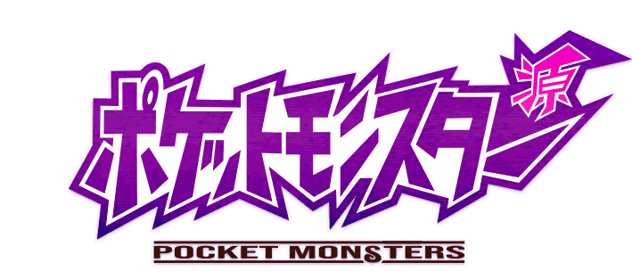
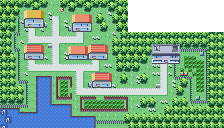
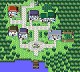
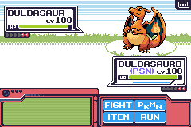
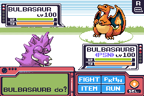
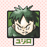
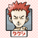
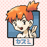

Project Minamoto
- Type
- A Pokémon fan game that re-reads Generation 1 on the Game Boy Advance
- Hardware
- GBA, 240 × 160
- Started
- 2021, still in progress ?
- My part
- Design, pixel art, UI, balancing models ?
Gen 1, again
Minamoto (源) means source, or origin. The project goes back to the source: the first Pokémon games, Red, Green and Blue, re-read on the hardware that came after them.
The research starts further back than the finished games. The project folder holds the Japanese Pocket Monsters Green and the prototype data of Red and Green: the first move names, the early encounter tables, the trainer classes and parties that were changed before release.
QUESTION FOR OMARWhat is Minamoto, in your words: a remake, a "what Gen 1 could have been" from the prototype, or something else? This page should open with your own sentence.
Pallet Town
The first map, drawn twice. The 2021 version, and the one from this month, at the size of one Game Boy screen.


QUESTION FOR OMARWhy did the newest Pallet Town shrink to 160 × 144? Is the overworld moving to GB proportions, or is it a study?
Battle
The battle screen keeps the Gen 1 layout and its words (FIGHT, PKMN, ITEM, RUN) and redraws it for the GBA: a status box with HP and a second bar, a pink command frame, a SEL. button in the corner.


QUESTION FOR OMARWhat is the second bar under HP, the orange one marked TP?
Gym Leaders
Every Gym Leader gets a portrait, framed like a card with their name in katakana.



QUESTION FOR OMARWho is ユジロ, and why does he come first? I'm guessing it's from the prototype data, but I'd rather you tell the story.
Balancing with numbers
Minamoto is balanced with a model, not by feel alone. A Python simulation plays thousands of battles using the real Gen 1 damage formula: levels, stats, type effectiveness, same-type bonus, a random roll. It checks whether a player who catches what each route offers, in the order the routes come, can beat each Gym Leader's team.
- The encounters file lists every route in its new order, with levels and rates.
- The bosses file holds the Gym Leaders' Pokémon, starting with Brock's Onix at level 14.
- The results record which moves a winning team leaned on: a level 18 Mankey beating the boss, mostly with Karate Chop and Scratch.
QUESTION FOR OMARIs that a fair summary of the MathModels folder? It's a strong design story, and it deserves your own explanation of why you built it.